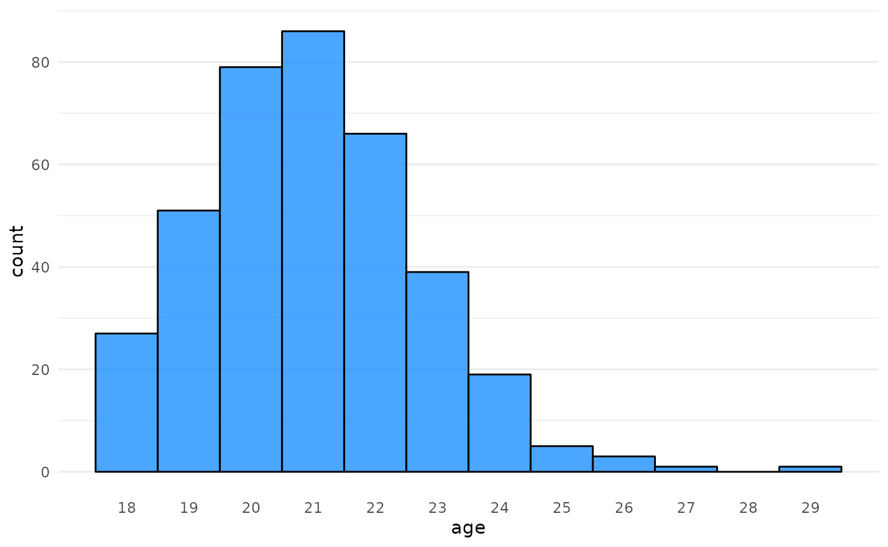
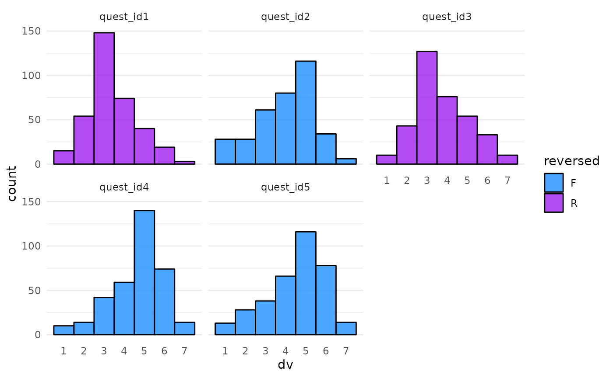

Have you ever wanted to create unique versions of datasets for each student in a class? This vignette walks through the process of setting up a simple study with a subject table and a questionnaire table.
The subjects have varying demographic attributes and are assigned to a counterbalanced condition and version of the study. Some of the demographic data is missing.
The questionnaire has a variable number of questions, answered on a 7-point Likert scale. Some of the questions are reverse-coded, indicated by the column names. There are some missing observations.
The data is set up with fixed effects for condition, version, and subject language that you can vary between students. The DV is created using a mixed effects model formula to simulate realistic random intercepts and slopes, so these data would be suitable for analysis with mixed effects models, or you can instruct students to aggregate the questionnaire data to analyse with single-level models.
A custom assignment is created for each student, where they are told the questionnaire contains scores on one of three topics, and are asked to determine if there is an effect of one factor for a subgroup of another factor. The categories chosen here are pretty arbitrary, but you can change this to make sense for your subject area.
Finally, the subject table, questionnaire table, and instructions are saved to a folder with the student ID for distribution to each student. The simulation is seeded with the student ID, ensuring that each student gets a unique, but reproducible assignment.
Setup
Some of the functions below require version 1.1.0 of faux
(add_random(), add_between(),
add_ranef() and add_contrast()). Any feedback
would be welcome.
# devtools::install_github("debruine/faux")
library(faux)
library(dplyr)
library(tidyr)
library(purrr)
library(ggplot2)
library(readr)
library(glue)
theme_set(theme_minimal())Start your script by setting a seed that is unique to each student. Below is a useful function you can use to generate a seed from a student ID, even if it contains letters.
seed_from_string <- function(seed) {
if (is.numeric(seed)) return(set.seed(seed))
# otherwise set from characters
seed %>%
openssl::md5() %>% # turn into something with lots of numbers
gsub("[a-z]", "", .) %>% # get rid of letters
substr(1, 8) %>% # select the first 8 numbers
set.seed()
}
student_id <- "8675309J"
seed_from_string(student_id)Simulate subjects
Now, make a table of subjects.
Random factor
In this example, I’m going to choose a random number of subjects between 300 and 400.
subj_n <- sample(300:400, 1)The function add_random() creates the random effects
structure.
subjects <- add_random(subj_id = subj_n)| subj_id |
|---|
| subj_id001 |
| subj_id002 |
| subj_id003 |
| subj_id004 |
| subj_id005 |
| subj_id006 |
Gender
Now add a between-subject factor of gender with three levels: “female”, “male”, and “nonbinary”. If you set the probability of each as proportions, they will be randomly sampled.
subjects <- subjects %>%
add_between(gender = c("female", "male", "nonbinary"),
.prob = c(.3, .6, .1))| gender | n |
|---|---|
| female | 129 |
| male | 215 |
| nonbinary | 52 |
It’s realistic for some people to not want to disclose their gender,
so you can use messy() to set some proportion of the
gender column to NAs.
| gender | n |
|---|---|
| female | 125 |
| male | 202 |
| nonbinary | 50 |
| NA | 19 |
Age
Now add an age column. I’m using 18 + rpois(nrow(.), 3)
to make a distribution that’s pretty typical of undergraduate students,
but you can choose a simulation function that is relevant to your
questions. I’m also replacing 5% of the values with the word “missing”,
which will convert this to a character column because I want students to
practice dealing with non-standard missing values.
subjects <- subjects %>%
mutate(age = 18 + rpois(nrow(.), 3)) %>%
messy(prop = 0.05, "age", replace = "missing")
Language
Add a between-subjects factor of language, with 70% monolingual and 30% bilingual.
subjects <- subjects %>%
add_between(language = c("monolingual", "bilingual"),
.prob = c(.7, .3))Experiment factors
I want condition and version to be crossed so that there’s an equal
number of subjects in each cell. Specifying both in the same
add_between() accomplishes this.
subjects <- subjects %>%
add_between(condition = c("A", "B"),
version = c("V1", "V2"))| condition | version | n |
|---|---|---|
| A | V1 | 99 |
| A | V2 | 99 |
| B | V1 | 99 |
| B | V2 | 99 |
Subject function
Now wrap the code for making the subject table in a function. This makes it easy to make more than one subject table for a simulated study, for example, to have students practice combining tables.
You can also add other arguments that you might want to vary, like the names of the condition and version levels. Set the defaults to what we used in the example above.
make_subjects <- function(subj_n = sample(300:400, 1),
cond_levels = c("A", "B"),
vers_levels = c("V1", "V2")) {
add_random(subj_id = subj_n) %>%
add_between(gender = c("female", "male", "nonbinary"),
.prob = c(.3, .6, .1)) %>%
messy(prop = 0.05, "gender") %>%
mutate(age = 18 + rpois(nrow(.), 3)) %>%
messy(prop = 0.05, "age", replace = "missing") %>%
add_between(language = c("monolingual", "bilingual"),
.prob = c(.7, .3)) %>%
add_between(condition = cond_levels,
version = vers_levels)
}
subjects <- make_subjects()| subj_id | gender | age | language | condition | version |
|---|---|---|---|---|---|
| subj_id001 | female | 20 | bilingual | A | V1 |
| subj_id002 | female | 19 | monolingual | A | V2 |
| subj_id003 | male | 23 | bilingual | B | V1 |
| subj_id004 | female | 21 | monolingual | B | V2 |
| subj_id005 | male | 22 | monolingual | A | V1 |
| subj_id006 | male | 24 | bilingual | A | V2 |
Simulate questions
Next, we need to set up the questionnaire. I’m going to do this by adding the question data to the subject table. We’ll extract the questions into a separate table later, but this will make it easier to set up the DV using a mixed effects model equation.
Random factor
First, we’ll add the random factor of question, randomly creating 5 to 15 question IDs. The code below adds a cross-classified random factor, where each subject sees all of the questions. See the Mixed Design Simulation tutorial to see how to add nested random factors.
quest_n <- sample(5:15, 1)
questions <- subjects %>%
add_random(quest_id = quest_n)| subj_id | gender | age | language | condition | version | quest_id |
|---|---|---|---|---|---|---|
| subj_id001 | female | 20 | bilingual | A | V1 | quest_id1 |
| subj_id001 | female | 20 | bilingual | A | V1 | quest_id2 |
| subj_id001 | female | 20 | bilingual | A | V1 | quest_id3 |
| subj_id001 | female | 20 | bilingual | A | V1 | quest_id4 |
| subj_id001 | female | 20 | bilingual | A | V1 | quest_id5 |
| subj_id002 | female | 19 | monolingual | A | V2 | quest_id1 |
Question reversing
I want some of the questions to be reverse-coded, so I’m adding a
between-question factor of reversed with levels “F” and
“R”. Here, we specify the .by = argument to show that this
factor should vary by question. We didn’t need this in the code above
because there was only one random factor to vary over, but by default
this function varies over all random factors if there is more than
one.
I set .shuffle = TRUE so that the questions are randomly
assigned forward and reversed values, rather than odd questions being
forward and even questions being reversed. This will require a more
sophisticated method to wrangle the resulting data, and the
randomisation means that different students’ datasets need different
code.
questions <- questions %>%
add_between(.by = "quest_id", reversed = c("F", "R"), .shuffle = TRUE)| quest_id | reversed |
|---|---|
| quest_id1 | R |
| quest_id2 | F |
| quest_id3 | R |
| quest_id4 | F |
| quest_id5 | F |
Random effects
Now we set the random effects structure. The function
add_ranef() lets you add columns that sample values from a
normal distribution with a mean of 0 and the specified SD. If you have
example data, you can get realistic values for the random effects SDs
from a mixed effects model (see this tutorial).
Here, we’re setting the SD for the subject’s random intercept to 2, and the SDs for the random slopes of language, condition, and version to 1. We set a small, positive correlation among all of these random effect. Each time you run this function, different values from this joint distribution will be sampled.
We also add a random intercept by question to account for the fact that some questions will have higher or lower values than the mean.
Finally add an overall error term, sigma, which will
vary by subject and question (so you can skip the first .by
argument).
Fixed effects
Now we can calculate the DV. First, I want the fixed effects in each dataset to vary, so I’m setting the fixed effect values by sampling from -05., 0 and +0.5 for each of language, condition, and version.
Factor contrasts
Next, we add contrasts to recode the fixed factors into numbers. See the contrasts vignette for more details. For a 2-level factor, this sets the first level of the factor to a value of -0.5 and the second level to +0.5.
questions <- questions %>%
add_contrast("language", add_cols = T, colnames = "lang") %>%
add_contrast("condition", add_cols = T, colnames = "cond") %>%
add_contrast("version", add_cols = T, colnames = "vers")Calculate DV
Now, we can calculate the DV as the sum of the grand mean
(0), plus the random intercepts (s0i and
q0i). This simulates how some subjects tend to use higher
or lower points on the scale, and some questions have higher or lower
mean values.
Next, we add the coded versions of each fixed factor, multiplied by their effect size plus the subject’s random slope for that effect. This simulates how some subjects show systematically larger or smaller effects.
Finally, we add the error term (sigma).
questions <- questions %>%
mutate(dv = 0 + s0i + q0i +
(s_lang + lang_effect) * lang +
(s_cond + cond_effect) * cond +
(s_vers + vers_effect) * vers +
sigma)
Recode DV
For this assignment, I want the DV to be from a Likert scale, so I’m
going to convert dv from a normal distribution to a Likert
scale with 7 points with the proportions below. The second mutate
reverses the questions that should be reverse-coded.
questions <- questions %>%
mutate(dv = norm2likert(dv, prob = c(1, 2, 4, 6, 10, 5, 1)),
dv = ifelse(reversed == "R", abs(dv - 8), dv)
)
Reshape data
Here, I’m creating a quest_name column from the
quest_id and reversed columns.
sample(2:3) returns these columns in a random order. I then
unite the columns with a randomly sampled separator. This will produce
question names like F-q04 or q10 R. While
putting information about the questions in the name isn’t great practice
for recording data, it’s unfortunately very common and dealing with it
is a skill I want my students to practice.
sep <- sample(c("_", "", "-", " "), 1)
questions <- questions %>%
select(subj_id, quest_id, reversed, dv) %>%
unite(col = quest_name, sample(2:3), sep = sep) I then make 0.5% of the observations missing, pivot the table from long to wide format, and sample 95% of the subjects, so that the number of subjects in the subjects table doesn’t exactly match the number in the questions table, and is in a different order.
questions <- questions %>%
messy(prop = .005, "dv") %>%
pivot_wider(names_from = quest_name, values_from = dv) %>%
slice_sample(prop = .95)Questionnaire function
Now wrap the code for making the questionnaire table in a function. You can use this to make several questionnaires per student to practice joining tables.
This code needs the subjects table as an argument. You can add the
other randomised values as arguments. I also added
likert_prob as an argument so you can easily customise the
number of points on the Likert scale and their relative proportions.
# randomise between students
make_quest <- function(subjects,
quest_n = 5:15,
sep = c("_", "", "-", " "),
lang_effect = c(-0.5, 0, 0.5),
cond_effect = c(-0.5, 0, 0.5),
vers_effect = c(-0.5, 0, 0.5),
likert_prob = c(.05, .1, .2, .3, .2, .1, .05)
) {
# sample values
quest_n <- sample(quest_n, 1)
sep <- sample(sep, 1)
lang_effect <- sample(lang_effect, 1)
cond_effect <- sample(cond_effect, 1)
vers_effect <- sample(vers_effect, 1)
subjects %>%
add_random(quest_id = quest_n) %>%
add_between("quest_id", reversed = c("F", "R")) %>%
add_ranef("subj_id",
s0i = 2,
s_lang = 1,
s_cond = 1,
s_vers = 1,
.cors = 0.2) %>%
add_ranef("quest_id", q0i = 1) %>%
add_ranef(sigma = 3) %>%
add_contrast("language", add_cols = T, colnames = "lang") %>%
add_contrast("condition", add_cols = T, colnames = "cond") %>%
add_contrast("version", add_cols = T, colnames = "vers") %>%
mutate(dv = s0i + q0i + sigma +
(s_lang + lang_effect) * lang +
(s_cond + cond_effect) * cond +
(s_vers + vers_effect) * vers,
dv = norm2likert(dv, prob = likert_prob),
dv = ifelse(reversed == "R", abs(dv - 8), dv)
) %>%
select(subj_id, quest_id, reversed, dv) %>%
unite(quest_name, sample(2:3), sep = sep) %>%
messy(prop = .005, "dv") %>%
pivot_wider(names_from = quest_name, values_from = dv) %>%
slice_sample(prop = .95)
}
questions <- make_quest(subjects)| subj_id | F-quest_id1 | R-quest_id2 | F-quest_id3 | R-quest_id4 | F-quest_id5 | R-quest_id6 | F-quest_id7 |
|---|---|---|---|---|---|---|---|
| subj_id267 | 4 | 5 | 1 | 6 | 5 | 6 | 2 |
| subj_id098 | 5 | 2 | 6 | 2 | 4 | 3 | 4 |
| subj_id023 | 5 | 5 | 7 | 5 | 6 | 6 | 2 |
| subj_id259 | 5 | 1 | 3 | 3 | 4 | 7 | 3 |
| subj_id249 | 7 | 2 | 7 | 4 | 5 | 3 | 5 |
| subj_id008 | 7 | 4 | 7 | 2 | 7 | 4 | 3 |
Generate random assignment
I also want each student to have a different research question to answer with these data.
Write text
First, write the text you want to give to the students. You can use
fancier methods for this, like parametrised
R Markdown reports, but this is a simple and effective strategy. Put
variables you want to randomise inside curly brackets, and we’ll sample
those and insert the using glue::glue().
research_question_text <- paste(sep = "\n\n",
"=== Reproducible Report for {student_id} ===",
"Your questionnaire measures {topic}. Your research question is to determine if the {topic} score differs by {iv} for the subset of the sample where {subset} is {level}.",
"The {quest_n} {topic} questionnaire items are on a scale from 1 (low) to 7 (high), but some of the items need to be reverse-coded. This is indicated by the letter R in the question column name. You create the {topic} score by summing the questions.",
"Watch out for missing data. You can decide whether to omit subjects with missing data or replace the missing data; just explain your choice and its consequences in the report.",
"The report should be written like a summary document for your PI. You don't need to show your code in the rendered report. Include summary tables and/or plots with subject demographics from both the full data set and the subset you'll analyse. Visualise the relationship of interest. Conduct a GLM analysis to answer the research question above. Finally, do a power analysis to determine the sample size you would need to have {power}% power to detect a 0.5-point difference between the levels of {iv} with an alpha criterion of {alpha}."
)You can save this to an external file if you want and read it from there. In this way, you can create more than one set of template instructions and also randomly assign that.
# write to a template file
write(research_question_text, "template_instructions.txt")Define random aspects
Now define the variables from the text above. I want the
iv and subset to be two different factors from
the list of “language”, “condition”, and “version”. Then I sample one of
the levels of the subset factor.
I sample a topic from “stress”, “extroversion”, and “disgust”. You can choose relevant topics for your discipline, of course.
I also sample an alpha level and power for the power calculation aspect of the assessment. This reinforces a lesson I want to teach about alpha = 0.5 and target power = 0.8 being mindless defaults that we should question. Justify everything.
factors <- c("language", "condition", "version")
two_factors <- sample(factors, 2)
iv <- two_factors[[1]]
subset <- two_factors[[2]]
level <- subjects[[subset]] %>% unique() %>% sample(1)
topic <- sample(c("stress", "extroversion", "disgust"), 1)
alpha <- sample(c(.005, .01, .05), 1)
power <- sample(c(80, 85, 90), 1)This will produce the following text.
=== Reproducible Report for 8675309J ===
Your questionnaire measures extroversion. Your research question is to determine if the extroversion score differs by version for the subset of the sample where condition is A.
The 5 extroversion questionnaire items are on a scale from 1 (low) to 7 (high), but some of the items need to be reverse-coded. This is indicated by the letter R in the question column name. You create the extroversion score by summing the questions.
Watch out for missing data. You can decide whether to omit subjects with missing data or replace the missing data; just explain your choice and its consequences in the report.
The report should be written like a summary document for your PI. You don’t need to show your code in the rendered report. Include summary tables and/or plots with subject demographics from both the full data set and the subset you’ll analyse. Visualise the relationship of interest. Conduct a GLM analysis to answer the research question above. Finally, do a power analysis to determine the sample size you would need to have 80% power to detect a 0.5-point difference between the levels of version with an alpha criterion of 0.01.
Instructions function
As before, wrap this code in a function.
make_instructions <- function(template,
subjects,
factors = c("language", "condition", "version"),
topics = c("stress", "extroversion", "disgust"),
... # other values you need for the template, like student_id
) {
two_factors <- sample(factors, 2)
iv <- two_factors[[1]]
subset <- two_factors[[2]]
level <- subjects[[subset]] %>% unique() %>% sample(1)
topic <- sample(topics, 1)
alpha <- sample(c(.005, .01, .05), 1)
power <- sample(c(80, 85, 90), 1)
readLines(template) %>%
paste(collapse = "\n") %>%
glue::glue()
}
make_instructions(template = "template_instructions.txt",
subjects = subjects,
student_id = student_id,
quest_n = ncol(questions) - 1)
#> === Reproducible Report for 8675309J ===
#>
#> Your questionnaire measures stress. Your research question is to determine if the stress score differs by condition for the subset of the sample where version is V2.
#>
#> The 5 stress questionnaire items are on a scale from 1 (low) to 7 (high), but some of the items need to be reverse-coded. This is indicated by the letter R in the question column name. You create the stress score by summing the questions.
#>
#> Watch out for missing data. You can decide whether to omit subjects with missing data or replace the missing data; just explain your choice and its consequences in the report.
#>
#> The report should be written like a summary document for your PI. You don't need to show your code in the rendered report. Include summary tables and/or plots with subject demographics from both the full data set and the subset you'll analyse. Visualise the relationship of interest. Conduct a GLM analysis to answer the research question above. Finally, do a power analysis to determine the sample size you would need to have 85% power to detect a 0.5-point difference between the levels of condition with an alpha criterion of 0.005.Save files
Now you need to create a directory for the student’s files and save the subject table, question table, and instructions. I’m saving the files in a directory that contains the student ID so I can upload them to Moodle easily.
Simulation function
Once you’ve debugged your code above, put each step inside a function
with the argument student_id.
random_project <- function(student_id) {
# set seed using student ID
seed_from_string(student_id)
# simulate subjects
subjects <- make_subjects()
# simulate questionnaire
questions <- make_quest(subjects)
# customise instructions
instructions <- make_instructions(
template = "template_instructions.txt",
subjects = subjects,
student_id = student_id,
quest_n = ncol(questions) - 1
)
# write files to a new directory
dir <- paste0("exam_", student_id)
dir.create(dir, showWarnings = FALSE)
readr::write_csv(subjects, file.path(dir, "subjects.csv"))
readr::write_csv(questions, file.path(dir, "questions.csv"))
write(instructions, file.path(dir, "instructions.txt"))
return(dir)
}Now you can map over a list of student IDs to create personalised
data and research questions for each student. Here is the pattern if you
have student IDs in a table in a column called
Student ID.